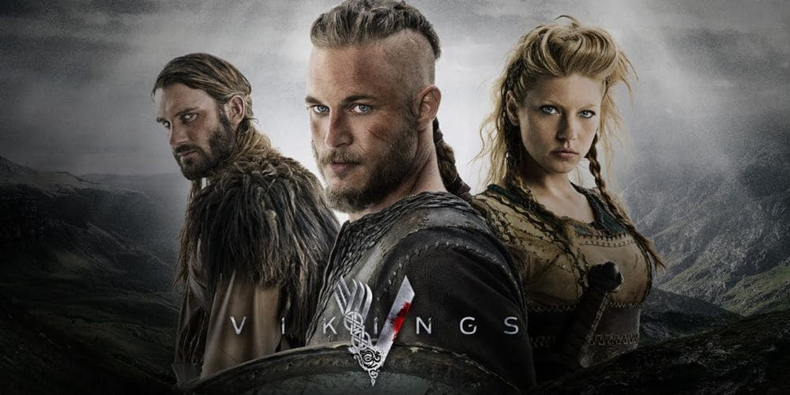
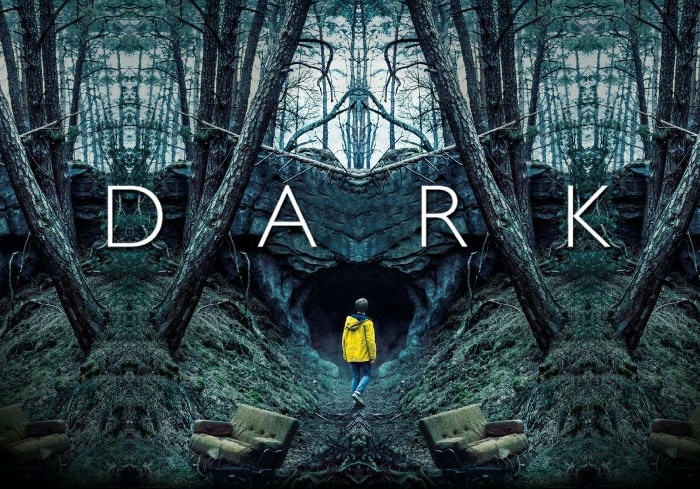
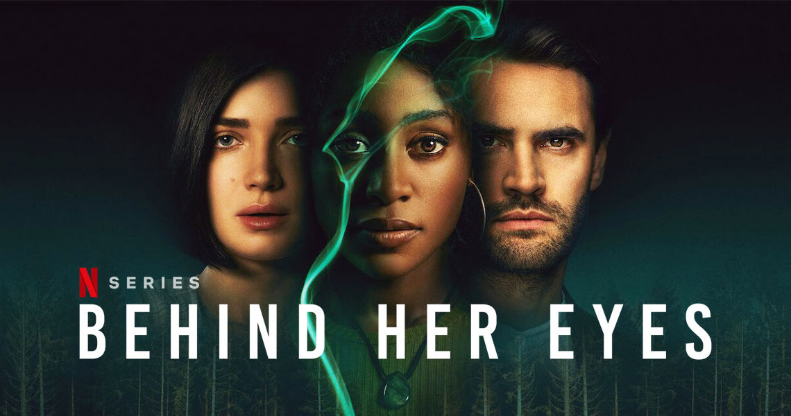
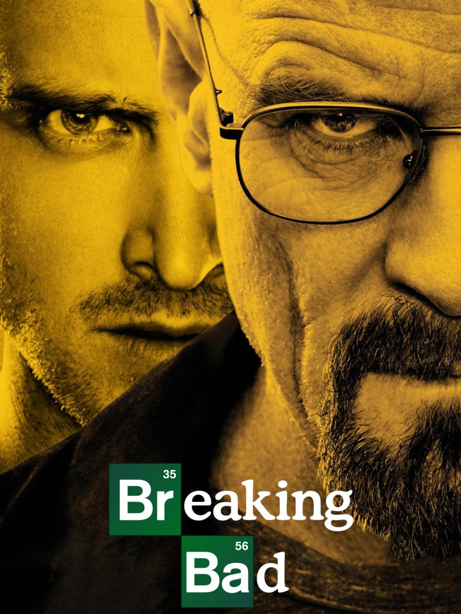
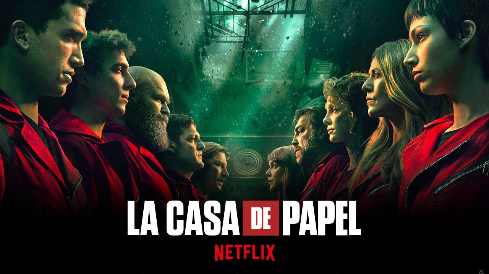
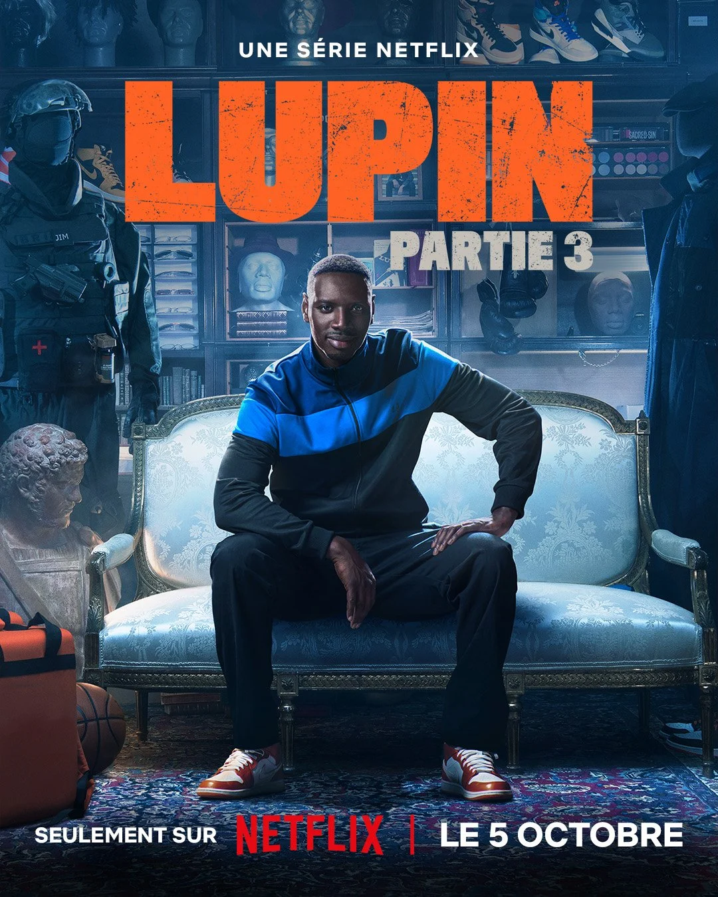

<!DOCTYPE html>
<html lang="fr">
<head>
    <meta charset="UTF-8">
    <meta name="viewport" content="width=device-width, initial-scale=1.0">
    <title>The Collection</title>
    
    <link href="assets/style.css" rel="stylesheet">
</head>
<body>
    <header>

    </header>
    <section class="Collection">
    <!--
    <section class="First">
        <div class="First_card">
            
            <h2 class="card_title">vikings</h2>
            <p class="creator">Michael Hirst</p>
            <p class="genre">Serie dramatique historique guerre</p>
            <p class="Date">2013</p>
            <p class="summary">Ragnar Lothbrok et son frère Rollo participent à une bataille contre les peuples baltes. 
                Après le massacre, Ragnar a des visions du dieu Odin et ses Valkyries. 
                De retour dans son village, Ragnar se rend, en compagnie de son fils Björn, à Kattegat pour assister au Thing
                 et afin que ce dernier subisse son rite de passage vers l'âge adulte. Restée à la ferme familiale, 
                 la femme de Ragnar, Lagertha, met en fuite deux vagabonds qui tentent de la violer. À Kattegat,
                 Ragnar convainc Rollo que les raids vers l'ouest sont plus prometteurs en termes de butin que 
                 les attaques traditionnelles contre les populations baltes. Il affirme qu'il est capable de trouver son cap 
                 en pleine mer grâce à un instrument qu'il s'est procuré auprès d'un voyageur, un compas de navigation.
                  Il est cependant réprimandé et menacé par son chef de clan, le jarl Haraldson,
                 qui ne croit pas à la présence de terres à l'ouest et souhaite poursuivre ses raids vers l'est.
                 Björn et Ragnar rendent visite à Floki, un charpentier de marine visionnaire qui, grâce au soutien financier de son ami Ragnar,
                 a secrètement entrepris la construction d'un nouveau type de navire, 
                 plus adapté à la navigation en haute mer. Les premiers essais en mer sont très prometteurs. </p>

        </div>
    </section>
    <section class="First">
        <div class="First_card">
            
            <h2 class="card_title">Virgin River</h2>
            <p class="creator">Ian Hay</p>
            <p class="genre">Serie dramatique romantique</p>
            <p class="Date">2019</p>
            <p class="summary">
                Melinda « Mel » Monroe, infirmière en deuil, répond à une annonce pour travailler dans la ville
                 reculée de Virgin River en Californie. Elle a tout abandonné à Los Angeles en pensant que ce serait l'endroit idéal 
                 pour repartir à zéro et laisser ses souvenirs douloureux derrière elle. Bien qu'accueillie avec bienveillance
                 dans la ville où tous se connaissent et s'entraident, elle découvre rapidement que la vie dans une petite ville
                 n'est pas aussi simple qu'elle s'y attendait et qu'elle doit apprendre à se guérir avant de pouvoir
                 vraiment faire de Virgin River son chez-soi.. </p>

        </div>
    </section>
    <section class="First">
        <div class="First_card">
            
            <h2 class="card_title">Good witch</h2>
            <p class="creator">Sue Tenney</p>
            <p class="genre">Serie Comédie dramatique fantastique</p>
            <p class="Date">2015</p>
            <p class="summary">
                Jake Russel élève seul ses enfants Brandon et Laurie depuis son veuvage. Un jour, la femme du maire l'informe 
                de l'arrivée de Cassandra à Grey House, un château abandonné et réputé hanté. Aussitôt, les commérages vont bon train 
                sur la belle et mystérieuse étrangère, surtout après l'ouverture de sa boutique de potions, bougies et livres anciens, 
                de plus de mystérieux événements se succèdent. Brandon et Laurie, eux, 
                sont persuadés que Cassandra est une gentille sorcière </p>

        </div>
    </section>
    <section class="First">
        <div class="First_card">
            
            <h2 class="card_title">Dark</h2>
            <p class="creator">Baran bo Odar</p>
            <p class="genre">Science-fiction</Science-fiction></p>
            <p class="Date">2015</p>
            <p class="summary">
                En 2019, le policier Ulrich Nielsen cherche désespérément son fils disparu, Mikkel, âgé de 11 ans. Trente-trois ans plus tôt, en 1986, 
                c'est son frère cadet Mads qui avait disparu dans des circonstances tout aussi mystérieuses. Dans la ville de Winden, quatre familles, 
                traumatisées par cette disparition, tentent de résoudre les mystères qui entourent la région.
                Jonas Kahnwald est lui aussi marqué par cette affaire, ainsi que par le suicide de son père. Il tente d'en savoir plus. </p>
        </div>
    </section>
    <section class="First">
        <div class="First_card">
            
            <h2 class="card_title">Behind her eyes</h2>
            <p class="creator">Steve Lightfoot</p>
            <p class="genre">Thriller</p>
            <p class="Date">2021</p>
            <p class="summary">
                Louise est une jeune femme divorcée et mère d'un petit garçon, Adam. Un soir alors qu'une amie lui fait faux bond à un bar, 
                elle rencontre un homme séduisant. À la sortie du bar, ils s'embrassent, mais l'homme s'excuse avant de partir précipitamment.
                 Le lendemain, à son travail de secrétaire dans un cabinet de psychiatres, Louise découvre le nouveau psychiatre et sa femme. 
                 Le docteur David Ferguson est en fait l'inconnu de la veille. Lorsque Louise le voit seul, elle lui dit que rien ne s'est passé. 
                 Peu de temps après, elle croise sa femme Adele dans la rue.
                 Elles sympathisent et deviennent peu à peu amies. Mais le couple semble partager un sombre secret. </p>
        </div>
    </section>
    <section class="First">
        <div class="First_card">
            
            <h2 class="card_title">Breaking Bad</h2>
            <p class="creator">Vince Gilligan</p>
            <p class="genre">Drame-Policier-Thriller-Comédie noire-Tragédie</p>
            <p class="Date">2013</p>
            <p class="summary">
                Walter « Walt » White est professeur de chimie dans une école secondaire. Il vit à Albuquerque, au Nouveau-Mexique, 
                avec son fils handicapé moteur et son épouse enceinte. Le lendemain de son cinquantième anniversaire, 
                on lui diagnostique un cancer du poumon en phase terminale avec une espérance de vie estimée à deux ans. 
                Tout s'effondre pour lui. Il décide alors de mettre en place un laboratoire et un trafic de méthamphétamine 
                pour assurer un avenir financier confortable à sa famille après sa mort, 
                en s'associant à Jesse Pinkman, un de ses anciens élèves devenu petit trafiquant. </p>
        </div>
    </section>
    <section class="First">
        <div class="First_card">
            
            <h2 class="card_title">You</h2>
            <p class="creator">Greg Berlanti</p>
            <p class="genre">Thriller psychologique</p>
            <p class="Date">2018</p>
            <p class="summary">
                Joe Goldberg, gérant d'une modeste librairie à New York. Un jour, il fait la rencontre d'une cliente, Guinevere Beck. 
                La jeune femme est un véritable coup de foudre pour Joe qui décide de la retrouver sur Internet.Joe devient vite obsédé par Beck.
                Il l'observe et cherche à connaître chaque détail de sa vie sur les réseaux sociaux, notamment ses habitudes ou ses amis.
                Persuadé qu'ils sont faits l'un pour l'autre, il va tenter de renverser tous les obstacles qui pourraient se dresser 
                en travers de son chemin et élaborer un stratagème machiavélique pour la séduire. </p>
        </div>
    </section>
    <section class="First">
        <div class="First_card">
            
            <h2 class="card_title">La casa de papel</h2>
            <p class="creator">Alex Pina</p>
            <p class="genre">Drame-Thriller-Braquage</p>
            <p class="Date">2017</p>
            <p class="summary">Un homme mystérieux, surnommé le Professeur, planifie le meilleur braquage jamais réalisé. 
                Pour exécuter son plan, il recrute huit des meilleurs malfaiteurs en Espagne qui n'ont rien à perdre.</p>
        </div>
    </section>
    <section class="First">
        <div class="First_card">
            
            <h2 class="card_title">Emily in Paris</h2>
            <p class="creator">Darren Star</p> co
            <p class="genre">Comédie dramatique et romantique</p>
            <p class="Date">2020</p>
            <p class="summary">
                Emily Jane Cooper, une Américaine originaire de Chicago, accepte de déménager en France, et plus précisément à Paris, 
                pour saisir une opportunité professionnelle. En effet, la société de marketing où elle travaille vient de faire l'acquisition 
                de Savoir, une autre société spécialisée dans le marketing basée en France. L'agence d'Emily souhaite y apporter
                un point de vue américain pour moderniser son image. </p>
        </div>
    </section>
    <section class="First">
        <div class="First_card">
            
            <h2 class="card_title">lupin</h2>
            <p class="creator">	George Kay</p> co
            <p class="genre">Drame-Policier-Thriller-Action</p>
            <p class="Date">2021</p>
            <p class="summary">
                En 1995, le jeune Assane Diop est bouleversé par le suicide de son père, accusé d'un vol qu'il n'a pas commis. 
                Vingt-cinq ans plus tard, Assane organise le vol d'un collier ayant appartenu à Marie-Antoinette d'Autriche. 
                Le bijou, aujourd'hui exposé au musée du Louvre, appartenait à la riche famille Pellegrini. Il veut se venger de cette famille 
                ayant accusé à tort son père, en s'inspirant de son personnage fétiche : le « gentleman cambrioleur » Arsène Lupin, 
                utilisant la science de ce personnage aux multiples facettes imaginé par Maurice Leblanc pour échapper à la police. 
                En parallèle de ses activités illégales, 
                Assane tente également de s'occuper davantage de son fils Raoul, qui vit aujourd'hui avec son ex-petite amie Claire1. </p>
        </div>
    </section>
    <section class="First">
        <div class="First_card">
            
            <h2 class="card_title">Outlander</h2>
            <p class="creator">Ronald D. Moore</p>
            <p class="genre">Drame-Fantasy</p>
            <p class="Date">2014</p>
            <p class="summary">
                En 1945, une infirmière de guerre, Claire Randall, mariée à un descendant de capitaine des Dragons, Frank Randall, 
                se retrouve transportée dans l'Écosse révoltée de 1743. Là-bas, elle va être immédiatement confrontée à un monde d'aventures 
                qui lui est inconnu. Elle y rencontre l'ancêtre de son mari, le capitaine Jack Randall, la rébellion et l'un de ses protagonistes, 
                un guerrier des Highlands, Jamie Fraser, ce qui la laissera partagée entre deux mondes et deux hommes que tout oppose </p>
        </div>
    </section>

-->

</section>

    

<script src="script/script.js"></script>
</body>
</html>
